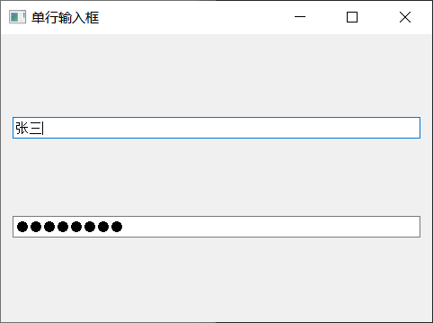
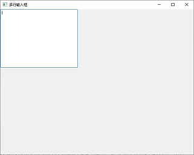

<!DOCTYPE lake>
<h2 data-lake-id="SOB3v" data-lake-index-type="2" id="SOB3v"><span data-lake-id="uf9631a6d" id="uf9631a6d">单行文本输入框</span></h2><p data-lake-id="ud83523b9" id="ud83523b9"><span data-lake-id="u7fbc3e39" id="u7fbc3e39">QLineEdit控件可以输入单行文本</span></p><span class="yuque-card-unsupported">[codeblock]</span><p data-lake-id="u18b08ba6" id="u18b08ba6"><span data-lake-id="u04a92669" id="u04a92669">运行程序:</span></p><p data-lake-id="u8b1c3feb" id="u8b1c3feb"></p><p data-lake-id="u153f9a41" id="u153f9a41"><strong><span data-lake-id="ubd3624f3" id="ubd3624f3">QLineEdit的方法</span></strong></p><table class="lake-table" data-lake-id="B9eyM" id="B9eyM" margin="true" style="width: 709px"><colgroup><col width="215"/><col width="494"/></colgroup><tbody><tr data-lake-id="u7236bb87" id="u7236bb87"><td data-lake-id="uca1577a8" id="uca1577a8"><p data-lake-id="ua3072a18" id="ua3072a18" style="text-align: center"><strong><span data-lake-id="u34e0f70f" id="u34e0f70f">方法</span></strong></p></td><td data-lake-id="u1ef07035" id="u1ef07035"><p data-lake-id="u59bb4c7f" id="u59bb4c7f" style="text-align: center"><strong><span data-lake-id="ua4aa6596" id="ua4aa6596">说明</span></strong></p></td></tr><tr data-lake-id="u826b1381" id="u826b1381"><td data-lake-id="u81df6873" id="u81df6873"><p data-lake-id="u8853aceb" id="u8853aceb" style="text-align: center"><code data-lake-id="u0de984ba" id="u0de984ba"><span data-lake-id="u98474c6b" id="u98474c6b">setEchoMode()</span></code></p></td><td data-lake-id="u2dc1f2f7" id="u2dc1f2f7"><p data-lake-id="u571ada7b" id="u571ada7b"><code data-lake-id="u93f9ead3" id="u93f9ead3"><span data-lake-id="uff693f6c" id="uff693f6c">QLineEdit.Normal</span></code><span data-lake-id="u3b171982" id="u3b171982">正常显示所输入的字符,默认选项</span></p><p data-lake-id="ub278a6f0" id="ub278a6f0"><code data-lake-id="uc5e3ab13" id="uc5e3ab13"><span data-lake-id="u3cc7efad" id="u3cc7efad">QLineEdit.NoEcho</span></code><span data-lake-id="u334a4551" id="u334a4551">不显示任何输入的字符,常用于密码类型的输入,且其密码长度需要保密时</span></p><p data-lake-id="ud0457007" id="ud0457007"><code data-lake-id="u806f8943" id="u806f8943"><span data-lake-id="ua89aa528" id="ua89aa528">QLineEdit.Password</span></code><span data-lake-id="u44b9adba" id="u44b9adba">显示与平台相关的密码掩码字符,而不是实际输入的字符</span></p><p data-lake-id="ud5ebafbd" id="ud5ebafbd"><code data-lake-id="u752385b7" id="u752385b7"><span data-lake-id="u01478c69" id="u01478c69">QLineEdit.PasswordEchoOnEdit</span></code><span data-lake-id="u7e1b9aa3" id="u7e1b9aa3">在编辑时显示字符,负责显示密码类型的输入</span></p></td></tr><tr data-lake-id="u2ea297e4" id="u2ea297e4"><td data-lake-id="uf2dd7910" id="uf2dd7910"><p data-lake-id="uccbdd073" id="uccbdd073" style="text-align: center"><code data-lake-id="u7d603bb7" id="u7d603bb7"><span data-lake-id="u17136420" id="u17136420">setPlaceholderText()</span></code></p></td><td data-lake-id="u7544d68f" id="u7544d68f"><p data-lake-id="u8377594b" id="u8377594b"><span data-lake-id="u4f91fe41" id="u4f91fe41">设置文本框浮显文字</span></p></td></tr><tr data-lake-id="ucefdb293" id="ucefdb293"><td data-lake-id="u6e4b4727" id="u6e4b4727"><p data-lake-id="u8405fe7d" id="u8405fe7d" style="text-align: center"><code data-lake-id="u171d112b" id="u171d112b"><span data-lake-id="u8a388150" id="u8a388150">setText()</span></code></p></td><td data-lake-id="u2cb6bdcf" id="u2cb6bdcf"><p data-lake-id="ubb162abb" id="ubb162abb"><span data-lake-id="ud3fdba2f" id="ud3fdba2f">设置文本框内容</span></p></td></tr><tr data-lake-id="u6626a6e8" id="u6626a6e8"><td data-lake-id="ud3c85680" id="ud3c85680"><p data-lake-id="u3c206d8d" id="u3c206d8d" style="text-align: center"><code data-lake-id="ueafbeabf" id="ueafbeabf"><span data-lake-id="u556f9dbc" id="u556f9dbc">setMaxLength()</span></code></p></td><td data-lake-id="u41563d6c" id="u41563d6c"><p data-lake-id="u958c41dd" id="u958c41dd"><span data-lake-id="u58cff2fe" id="u58cff2fe">设置文本框所允许输入的最大字符数</span></p></td></tr></tbody></table><h2 data-lake-id="tgbAP" data-lake-index-type="2" id="tgbAP"><span data-lake-id="u3ff81838" id="u3ff81838">多行文本输入框</span></h2><p data-lake-id="u23b2ce10" id="u23b2ce10"><code data-lake-id="u1f5c3f73" id="u1f5c3f73"><span data-lake-id="u5bf8c417" id="u5bf8c417">QTextEdit</span></code><span data-lake-id="ue9f8c31c" id="ue9f8c31c">控件用来输入多行文本</span></p><span class="yuque-card-unsupported">[codeblock]</span><p data-lake-id="uaa757bc5" id="uaa757bc5"><span data-lake-id="u385c8d49" id="u385c8d49">运行程序:</span></p><p data-lake-id="u61991c43" id="u61991c43"></p><p data-lake-id="u0211da5f" id="u0211da5f"><strong><span data-lake-id="u2db2034e" id="u2db2034e">QTextEdit的方法</span></strong></p><table class="lake-table" data-lake-id="J7T3g" id="J7T3g" margin="true" style="width: 612px"><colgroup><col width="237"/><col width="375"/></colgroup><tbody><tr data-lake-id="ua8e2d166" id="ua8e2d166"><td data-lake-id="uec7961e4" id="uec7961e4"><p data-lake-id="u4c29aa2c" id="u4c29aa2c" style="text-align: center"><strong><span data-lake-id="u5344b291" id="u5344b291">方法</span></strong></p></td><td data-lake-id="u5e7019f8" id="u5e7019f8"><p data-lake-id="u89dca4be" id="u89dca4be" style="text-align: center"><strong><span data-lake-id="u919a5579" id="u919a5579">说明</span></strong></p></td></tr><tr data-lake-id="u37100e42" id="u37100e42" style="height: 36px"><td data-lake-id="u7fb145f7" id="u7fb145f7"><p data-lake-id="u16dec241" id="u16dec241" style="text-align: center"><code data-lake-id="u7162fdfa" id="u7162fdfa"><span data-lake-id="u7404e13e" id="u7404e13e">setPlainText()</span></code></p></td><td data-lake-id="u29b5723b" id="u29b5723b"><p data-lake-id="u6463a273" id="u6463a273"><span data-lake-id="ub351b212" id="ub351b212">设置多行文本框的文本内容</span></p></td></tr><tr data-lake-id="ub659952d" id="ub659952d"><td data-lake-id="u12413542" id="u12413542"><p data-lake-id="u20a56e82" id="u20a56e82" style="text-align: center"><code data-lake-id="u462eb47c" id="u462eb47c"><span data-lake-id="ub7c9da45" id="ub7c9da45">toPlainText()</span></code></p></td><td data-lake-id="u6b588220" id="u6b588220"><p data-lake-id="uef851de4" id="uef851de4"><span data-lake-id="u26e13ff5" id="u26e13ff5">返回多行文本框的文本内容</span></p></td></tr><tr data-lake-id="uc1ed743e" id="uc1ed743e"><td data-lake-id="u871411b1" id="u871411b1"><p data-lake-id="u43f44ad4" id="u43f44ad4" style="text-align: center"><code data-lake-id="u7dd3276f" id="u7dd3276f"><span data-lake-id="uf1b5057d" id="uf1b5057d">setHtml()</span></code></p></td><td data-lake-id="u8089bc1e" id="u8089bc1e"><p data-lake-id="uae8b9c67" id="uae8b9c67"><span data-lake-id="u5fab3c12" id="u5fab3c12">设置多行文本框的内容为HTML文档</span></p></td></tr><tr data-lake-id="uaa63f9b4" id="uaa63f9b4"><td data-lake-id="uc7442c09" id="uc7442c09"><p data-lake-id="u1ef44219" id="u1ef44219" style="text-align: center"><code data-lake-id="u3f7eac88" id="u3f7eac88"><span data-lake-id="ub0f5796c" id="ub0f5796c">toHtml()</span></code></p></td><td data-lake-id="u35d99e1c" id="u35d99e1c"><p data-lake-id="ua36d3f60" id="ua36d3f60"><span data-lake-id="u02e16ae3" id="u02e16ae3">返回多行文本框的HTML文档内容</span></p></td></tr><tr data-lake-id="u9b0b6917" id="u9b0b6917"><td data-lake-id="ucec3698b" id="ucec3698b"><p data-lake-id="ue77f7de3" id="ue77f7de3" style="text-align: center"><code data-lake-id="u11ede70c" id="u11ede70c"><span data-lake-id="uab2aaec6" id="uab2aaec6">clear()</span></code></p></td><td data-lake-id="u1e9af3e4" id="u1e9af3e4"><p data-lake-id="ua284f5e7" id="ua284f5e7"><span data-lake-id="u86f04561" id="u86f04561">清空多行文本框的内容</span></p></td></tr></tbody></table>